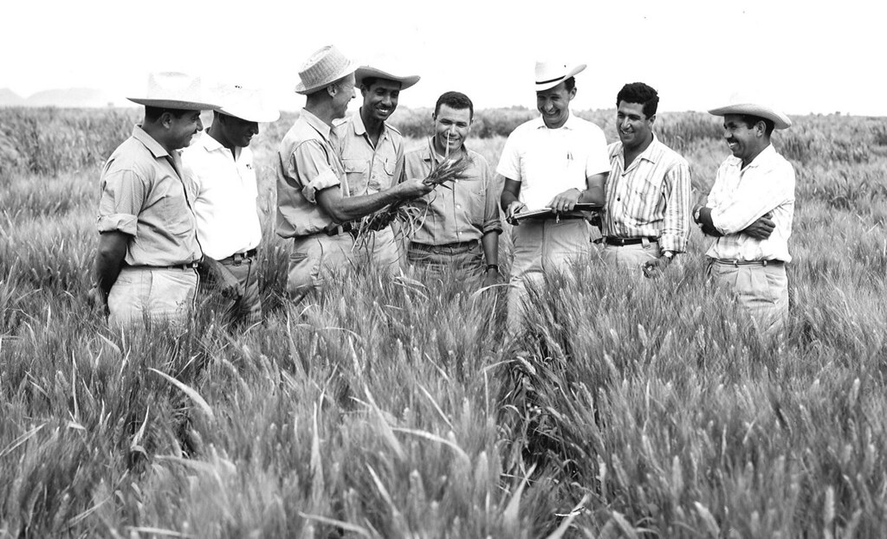

Dr. Norman Borlaug
The man who saved a billion lives

Here's a time line of Dr. Borlaug's life:
- 1914-Born in Cresco, Iowa
- 1933-Leaves his family's farm to attend the University of Minnesota, thanks to a Depression era program known as the "National Youth Administration"
- 1937-Finishes university and takes a job in the US Forestry Service
- 1938-Marries wife of 69 years Margret Gibson. Gets laid off due to budget cuts. Inspired by Elvin Charles Stakman, he returns to school study under Stakman, who teaches him about breeding pest-resistent plants.
- 1941-Tries to enroll in the military after the Pearl Harbor attack, but is rejected. Instead, the military asked his lab to work on waterproof glue, DDT to control malaria, disinfectants, and other applied science.
- 1942-Receives a Ph.D. in Genetics and Plant Pathology
- 1944-Rejects a 100% salary increase from Dupont, leaves behind his pregnant wife, and flies to Mexico to head a new plant pathology program. Over the next 16 years, his team breeds 6,000 different strains of disease resistent wheat - including different varieties for each major climate on Earth.
- 1945-Discovers a way to grown wheat twice each season, doubling wheat yields
- 1953-crosses a short, sturdy dwarf breed of wheat with a high-yeidling American breed, creating a strain that responds well to fertilizer. It goes on to provide 95% of Mexico's wheat.
- 1962-Visits Delhi and brings his high-yielding strains of wheat to the Indian subcontinent in time to help mitigate mass starvation due to a rapidly expanding population
- 1970-receives the Nobe.l Peace Prize
- 1983-helps seven African countries dramatically increase their maize and sorghum yields
- 1984-becomes a distinguished professor at Texas A&M University
- 2005-states "we will have to double the world food supply by 2050." Argues that genetically modified crops are the only way we can meet the demand, as we run out of arable land. Says that GM crops are not inherently dangerous because "we've been genetically modifying plants and animals for a long time. Long before we called it science, people were selecting the best breeds."
- 2009-dies at the age of 95
"Borlaug's life and achievement are testimony to the far-reaching
contribution that one man's towering intellect, persistence and
scientific vision can make to human peace and progress."
-- Indian Prime Minister Manmohan Singh